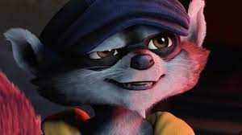
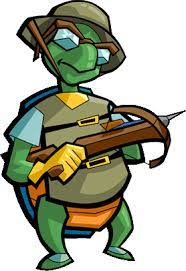
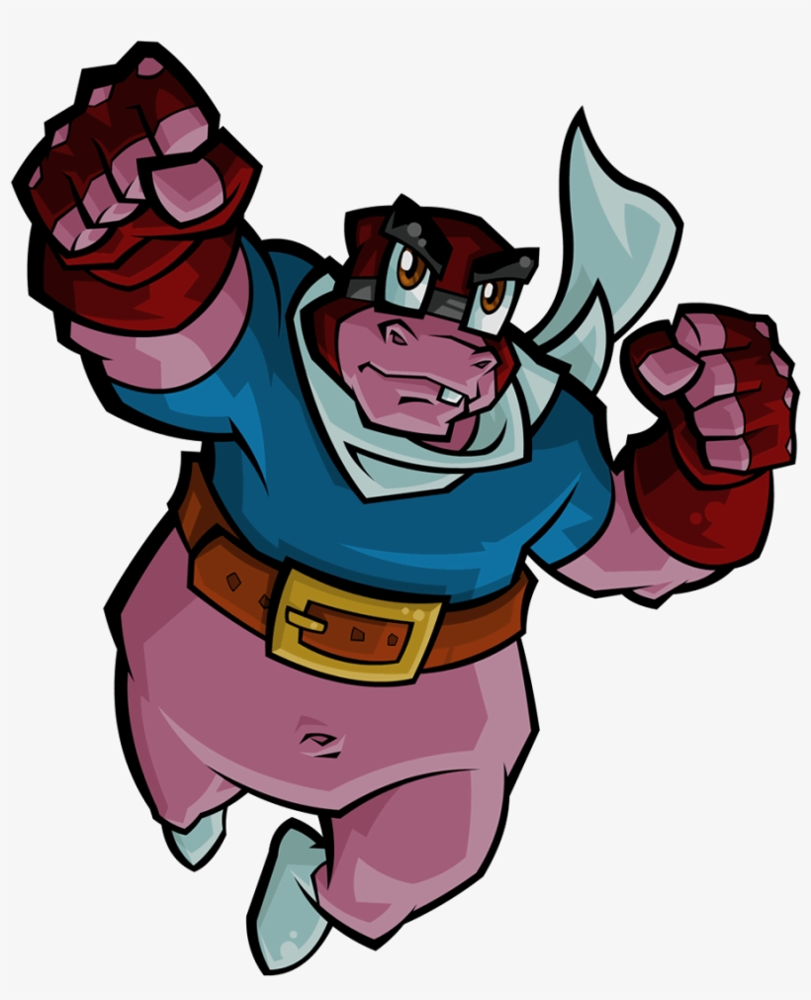
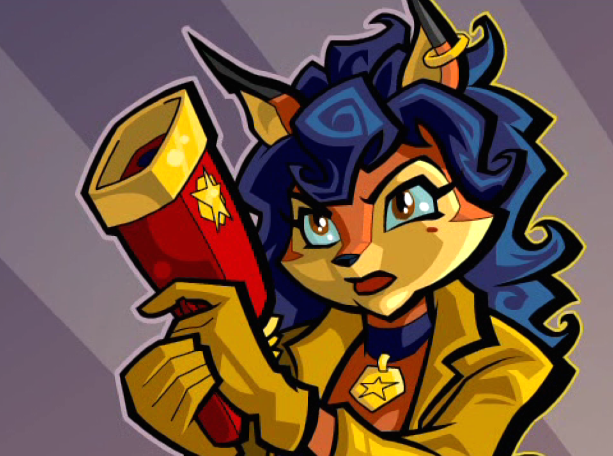

O jovem guaxinim protagonista que o jogador frequentemente controla. Ele faz parte de uma longa linhagem de ladrões mestres. Sly testemunhou a morte de seu pai Connor Cooper quando os 5 Diabólicos roubaram o Thievius Raccoonus, um livro com todas as técnicas especiais de sua família acumuladas por séculos. Ele foi para o orfanato onde fez amizade com Bentley e Murray, planejando sua vingança contra os 5 Diabólicos.

Bentley vivia no pântano com sua família, mas em razão de sua miopia teve que se afastar acabando em um orfanato, onde rapidamente se tornou amigo de Murray e Sly. Eles logo combinaram suas habilidades: o conhecimento de Bentley, a capacidade atlética de Sly e o entusiasmo de Murray, criando um vínculo para a vida toda.

Em circunstâncias que nunca foram reveladas, Murray ficou órfão ainda jovem e foi criado no Orfanato Happy Camper, onde conheceu Sly e Bentley. Em algum momento de sua juventude, Murray aprendeu a dirigir carros com fiação elétrica. Mais tarde, ele conseguiu um emprego como entregador de pizza, mas foi demitido após deixar cair muitas delas.

A inspetora Carmelita Fox é uma policial da Interpol que persegue Sly Cooper ao longo de toda a franquia. Apesar de ser sua adversária declarada, existe uma relação de respeito e interesse romântico entre os dois que evolui ao longo dos jogos.
| Personagem | Espécie | Papel |
|---|---|---|
| Sly Cooper | Guaxinim | Protagonista / Ladrão mestre |
| Bentley | Tartaruga | Gênio / Estrategista |
| Murray | Hipopótamo | Força bruta / Motorista |
| Carmelita Fox | Raposa | Antagonista / Inspetora da Interpol |